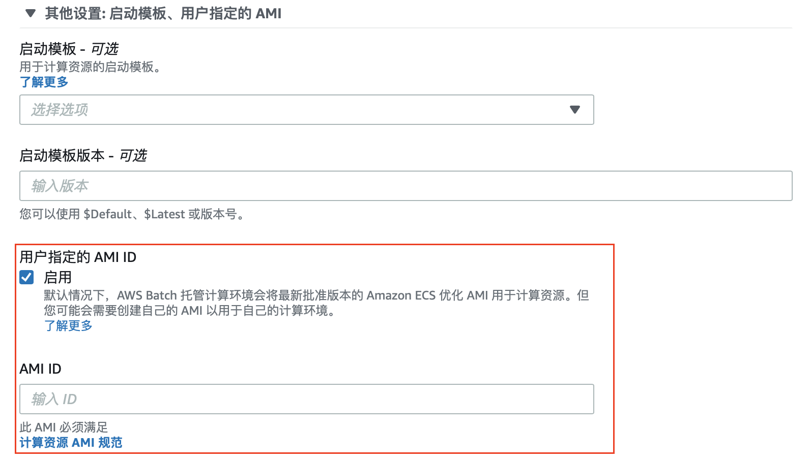
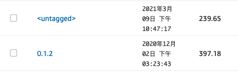

使用Batch服务一些提示
听说AWS和阿里云都有Batch（阿里云叫批量计算）服务，当时介绍说可以理解为云端PBS。 然后看了官方介绍视频，我理解更多的是任务切分和用适合的资源来进行调度。 当然，用这个服务还是有一些学习成本。 -- Sam
介绍之前
AWS官方的Batch介绍和文档是个很好的学习资源，另外Davis同学写的容器！利器！批量计算AWS Batch给生信人员举了很好的例子。
但文档是一回事，这篇文章简单介绍几个我使用Batch服务过程中学会的几个Tips。
计算环境配置
尽量使用与你需要资源相对应的机型。
当初我配置了自动的机型，然后发现我一次性同时开了多个任务，比如每个任务我设定需要4 CPU，7G RAM，同时开4个样本的任务，很可能Batch会给我使用16 CPU的机器。这样倒也不是不行，但有几个问题需要注意：
- 一台虚拟机执行多个任务的时候资源是共享的，比如我们做比对任务，你需要提起预估总共需要的存储空间；
- 如果你配置了Docker服务运行时的挂载选项，那多个任务就会同时访问这个挂载点，需要对每个任务设定不同的工作目录。
我的做法是，如果任务需要4 CPU，7G RAM，那就选择c4.xlarge或者c5.xlarge机型，这样可以保证每个虚拟机只执行一个任务。
I know，我这么做挺小白的，BITE ME!
自定义AMI
如果使用 按需 的实例配置，当提交任务时Batch会默认为你开启一台你选定机型的EC2虚拟服务器，系统是AmazonLinux 2，硬盘大小为20 GB。对于NGS分析而言，这个硬盘大小肯定是不够的。
一般而言，主要有两种解决方法，配置外部存储或者调整虚拟机AMI。
对于配置外部存储而言，我尝试过使用EFS，但的确，我还不太适应，主要性能上我还不太会配置。
相对而言，调整虚拟机AMI是个简单的解决方法，具体步骤如下：
- 首先你得制作一个AMI，参考这篇文章即可。注意，这个时候你需要根据分析流程配置足够性能和足够空间的硬盘；
- 请注意，自定义制作的AMI需要符合这篇文章的规范；
- 在创建计算环境时，在 实例配置 中选择 按需 实例配置，点开下方 其他设置：启动模板、用户指定的AMI 填入上一步制作的系统镜像ID。如下图所示。

Docker镜像
尽量使用Dockerfile
听起来像废话，但使用Dockerfile可以让镜像的制作可以追溯，像写代码一样制作镜像让我觉得非常有意思。
以下是我写的一个非常简单的让Docker拥有阿里云CLI功能的Dockerfile。
FROM amazonlinux:latest
RUN yum update -y
RUN yum install -y aws-cli wget tar util-linux python3
RUN mkdir -p /biosoftware
RUN mkdir -p /data
RUN cd /biosoftware && wget -O aliyun-cli-linux-latest-amd64.tgz https://aliyuncli.alicdn.com/aliyun-cli-linux-latest-amd64.tgz?spm=a2c4g.11186623.2.11.6a057dbflbfyNj\&file=aliyun-cli-linux-latest-amd64.tgz \
&& tar xzvf aliyun-cli-linux-latest-amd64.tgz && cp aliyun /usr/local/bin/
WORKDIR /data
镜像瘦身
以上简单的镜像的大小约为900MB，加了一个简单的功能就需要这么大的空间，不可思议对吧？
别担心，这个镜像上传到AWS ECR之后大概变成400MB，我猜测引用镜像之类的AWS会自动判断出来不占用额外空间。
同时，使用Docker的multi-stage builds技术可以减小镜像体积，以上示例可以修改为以下：
FROM amazonlinux:latest as build
RUN yum install -y aws-cli wget tar util-linux python3
RUN mkdir -p /biosoftware
RUN mkdir -p /data
RUN cd /biosoftware && wget -O aliyun-cli-linux-latest-amd64.tgz https://aliyuncli.alicdn.com/aliyun-cli-linux-latest-amd64.tgz?spm=a2c4g.11186623.2.11.6a057dbflbfyNj\&file=aliyun-cli-linux-latest-amd64.tgz \
&& tar xzvf aliyun-cli-linux-latest-amd64.tgz
FROM amazonlinux:latest as prod
RUN yum -y install aws-cli tar util-linux python3
RUN mkdir -p /biosoftware
COPY --from=build /biosoftware/aliyun /usr/local/bin/aliyun
WORKDIR /data
从下图可以直观看到镜像体积变化（<untagged>是瘦身后）。

关于镜像瘦身还有其他技术方式，比如使用体积更小alpine基础镜像等。
本次介绍先到这里，其他Tip会在本文中更新。